複数選択
MULTISELECT · 選択肢から複数を選ぶ入力欄
複数選択フィールドとは
- 1.1フィールドの追加と属性パネルの構成
1.1フィールドの追加と属性パネルの構成
概要
複数選択(MULTISELECT) は、選択肢から複数を同時に選ぶ入力欄です。併存疾患 · 併用薬 · 症状リストのように、該当するものをすべて記録する必要がある項目に使用します。選択肢はチェックボックスで表示され、保存される値も選んだものの集まりです。一つだけ選ばせる場合は単一選択タイプを使用します。
画面説明
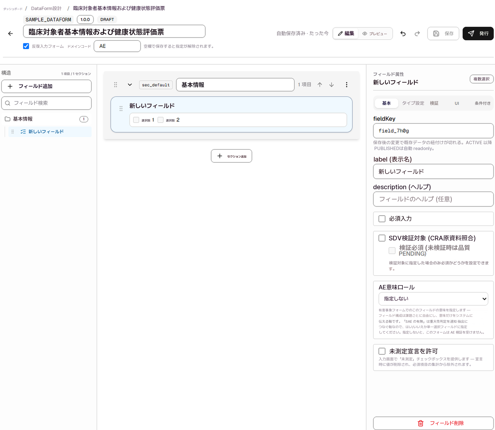
[+ フィールド追加] — ここでタイプを指定するとフィールドが作成されます。
構造ツリーに新しいフィールドが追加されます。
WYSIWYG キャンバスにチェックボックスが二つすでに置かれています。選択肢 1 · 選択肢 2 は仮に置かれているだけなので、必ず修正する必要があります。3.1
fieldKey — 値が保存される実際のキーです。2.1
label (表示名) · description (ヘルプ) — 画面に表示される名前と補足説明です。2.1
必須入力 · SDV検証対象 — 2.2 · 2.3 で扱います。
AE意味ロール — 画面の案内が「はい/いいえか単一選択フィールドに指定してください」と示しているとおり、このタイプは指定対象ではありません。複数の値を持つ欄では、重大性判定のような単一の軸を表せないためです。
未測定宣言を許可 — 2.4 で扱います。
タイプバッジ「複数選択」 — 選択したフィールドのタイプです。追加した後は変更できません。
属性タブ 5種 — 基本 · タイプ設定 · 検証 · UI · 条件付き。このマニュアルの2~6章が各タブに対応します。
注意事項
必須確認 データ破損 · フォーム完了不可
- • 保存される値は、選んだ選択肢の
valueの集まりです。一つだけ選んでも集まりであり、何も選ばなければ空の集まりです — 抽出データでも一つの欄に複数の値が入るため、分析担当者と形式をあらかじめ合わせておいてください。 - • タイプは追加した後に変更できません。誤って選択した場合は、フィールドを削除して再度追加してください。一つだけ選ばせるか複数を選ばせるかは、最初に決める必要があります。
- • 発行(PUBLISH)後は構造を変更できません。運用中に修正が必要な場合は、新しいバージョンを発行してください。
基本タブ — 名前 · 必須 · 検証対象 · 未測定
- 2.1fieldKey · 表示名 · ヘルプ
- 2.2必須入力
- 2.3SDV検証対象 (CRA原資料照合)
- 2.4未測定宣言を許可
2.1fieldKey · 表示名 · ヘルプ
概要
フィールドの名前を決める領域です。保存キー(fieldKey)と画面に表示される名前(label)は別々の値であり、変更してよいタイミングが異なります。
画面説明
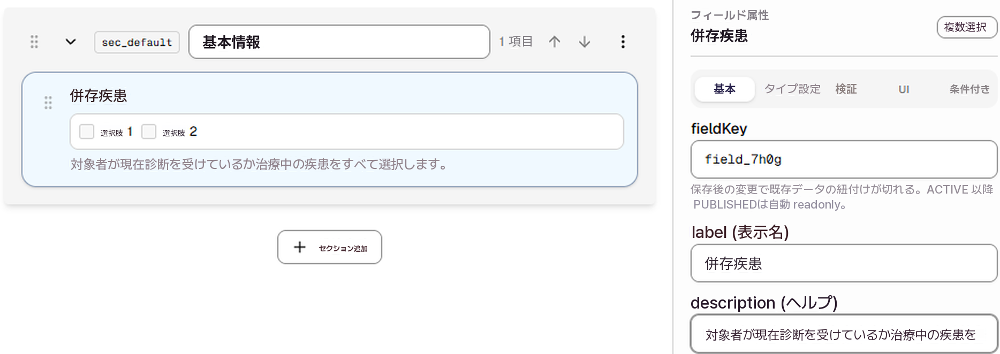
label (表示名) — 入力画面に表示する項目名を入力します。
キャンバスのフィールドタイトルとして表示されます。
description (ヘルプ) — 表示名の下に表示する補足説明を入力します。空欄にすると表示されません。
チェックボックスの下にグレーの文字で表示されます。
fieldKey — 値が保存される実際のキーです。フィールドを追加すると field_7h0g のように自動で付与され、英字 · 数字 · アンダースコアで変更できます。画面には表示されません — 下の注意事項を必ず確認してください。
注意事項
必須確認 データ破損 · フォーム完了不可
- • ⛔ 保存した後は fieldKey を変更しないでください。画面の案内のとおり「保存後の変更で既存データの紐付けが切れる」 — すでに入力された値が新しいキーと結び付かず、事実上失われます。
- • 「すべて選択」であることをヘルプに明記してください。キャプチャのように「… 疾患をすべて選択します」と書いておくと、記録者が一つだけ選んで先に進むミスを減らせます — チェックボックスでも複数を選ぶ必要があることを知らない場合があります。
- • フォームが ACTIVE 以降 PUBLISHED 状態になると、fieldKey 入力欄は自動で読み取り専用になります。システムが変更を防ぐのはそれ以降なので、それまではユーザー自身が注意する必要があります。
誤解しやすい動作
- • 表示名はいつ変更しても安全です。保存キーではなく画面の文言だからです。
2.2必須入力
概要
この項目を必ず選択する必要があるかを決めます。複数選択での必須は、一つ以上選べば充足という意味です — いくつ選ぶ必要があるかは設定できません。
画面説明
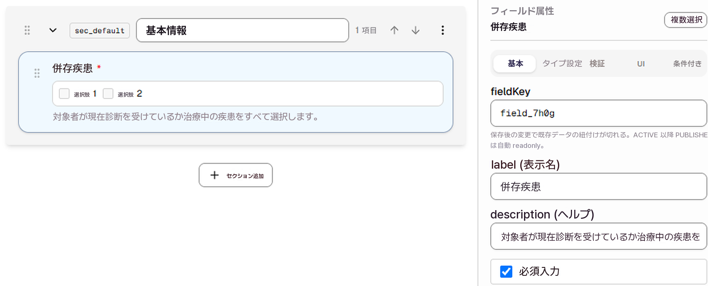
必須入力 — 選択すると、このフィールドが必須になります。
キャンバスの表示名の右に赤いアスタリスク(*)が表示され、ユーザーに必須であることを知らせます。
注意事項
必須確認 データ破損 · フォーム完了不可
- • ⛔ 「該当なし」の選択肢を先に作成してください。該当する項目が一つもない被験者は何も選べず、フォームを完了できません。併存疾患 · 併用薬のように「なし」がよくある項目であれば、
なしを選択肢に入れてください。3.2 - • 条件付き表示で非表示になったフィールドは、必須検証が免除されます。6章 一方、UIタブの非表示は除外されないため、混同しないでください。5.3
誤解しやすい動作
- • 「なし」と「まだ入力していない」は異なります。選択肢として置いた「なし」は確認した結果として保存されますが、空欄のままでは確認したかどうかさえ分かりません — そのため、選択肢として置く方がデータが明確になります。2.4
参考
- • 必須かどうかはフォーム完了判定に使用されます。一つも選ばない場合は、値が空であるものとして処理されます。
2.3SDV検証対象 (CRA原資料照合)
概要
SDV(Source Data Verification) は、臨床開発モニター(CRA)が入力値を医療機関の原資料と照合する手順です。このフィールドをその対象に指定するかどうかを、ここで決めます。この設定はすべてのフィールドタイプで共通なので、画面もタイプに関係なく同じです。
画面説明


SDV検証対象 (CRA原資料照合) — 選択すると、このフィールドが CRA の照合リストに含まれます。
選択状態に変わると、下位項目が有効になります。
検証必須 (未検証時は品質 PENDING) — ①を選択した後でなければ指定できません。選択すると、CRA が照合を終えるまで、そのデータの品質ステータスが PENDING のままになります。
①を選択する前は、②が薄く表示されて無効です。画面の案内のとおり「検証対象に指定した場合のみ必須かどうかを設定できます。」
注意事項
必須確認 データ破損 · フォーム完了不可
- • 値が変更されると検証が解除されます。チェックを一つ追加したり外したりするだけでも、品質ステータスが PENDING に戻り、CRA が再度照合する必要があります。
誤解しやすい動作
- • 複数選択は照合に手間がかかります。選んだ項目が正しいかだけでなく、漏れている項目がないかまで原資料と突き合わせる必要があるためです — 併存疾患のように漏れが問題になる項目にだけ指定する方が現実的です。
- • SDV は入力した本人が実施することはできません。システムがクロス検証(Cross-User SoD)を強制するため、入力者と検証者は必ず別の人である必要があります。
参考
- • 品質ステータスは PENDING → VERIFIED → CLEAN の順に進みます。検証必須に指定したフィールドが一つでも未検証であれば、そのデータは CLEAN になりません。
2.4未測定宣言を許可
概要
確認できなかった場合を値として区別して記録する機能です。何も選ばないと、「まだ入力していない」と「確認したが不明」を区別できません。この宣言がその二つを区別します。
画面説明

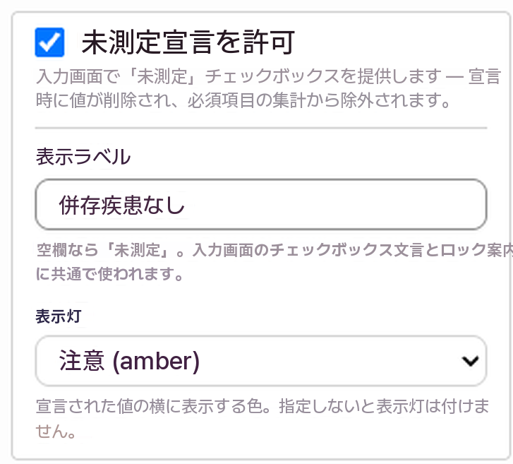
未測定宣言を許可 — 選択すると、入力画面に「未測定」チェックボックスが作成され、下の二つの項目が表示されます。
表示ラベル — 空欄にすると、デフォルト値「未測定」が適用されます。
文言を変えると、入力画面のチェックボックスとロック案内の両方にその文言が適用されます。
表示灯 — デフォルト値はなしです。
注意(amber) に変更すると、宣言された値の横にその色の表示が現れます。
注意事項
必須確認 データ破損 · フォーム完了不可
- • ⛔ 「なし」を未測定として記録しないでください。キャプチャの表示ラベル
併存疾患なしは、この落とし穴をそのまま示しています — 疾患がないことは確認した結果であり、確認できなかった状態ではありません。未測定として宣言すると値が削除され、必須集計からも外れるため、「なし」という臨床情報が失われます。「なし」を選択肢として追加してください。2.2 · 3.2 - • 宣言すると値が削除されます。画面の案内のとおり — 「宣言時に値が削除され、必須項目の集計から除外されます。」複数を選んでいた状態であれば、その選択がすべて消去されます。
誤解しやすい動作
- • 未測定は「確認そのものが不可能だった場合」に使います。病歴を聴取できなかった場合、記録が失われた場合などです。表示ラベルもその意味が分かるように書いてください (例:
確認不可)。
参考
- • 表示灯を指定しないと、色の表示は適用されません。強調が必要な場合は、注意(amber) などを選択してください。
タイプ設定タブ — 選択肢の作成
- 3.1タイプ設定タブの全体構成
- 3.2選択肢一覧 (value · label · 有効 · 順序 · 削除)
- 3.3選択肢出力方向 (1行あたりの個数)
3.1全体構成
概要
選択肢を作成するタブです。単一選択と似ていますが、項目がより少なくなっています — 選択肢の表示方式がチェックボックス一つに固定されているためです。このタイプで使用する項目は三つです。
画面説明
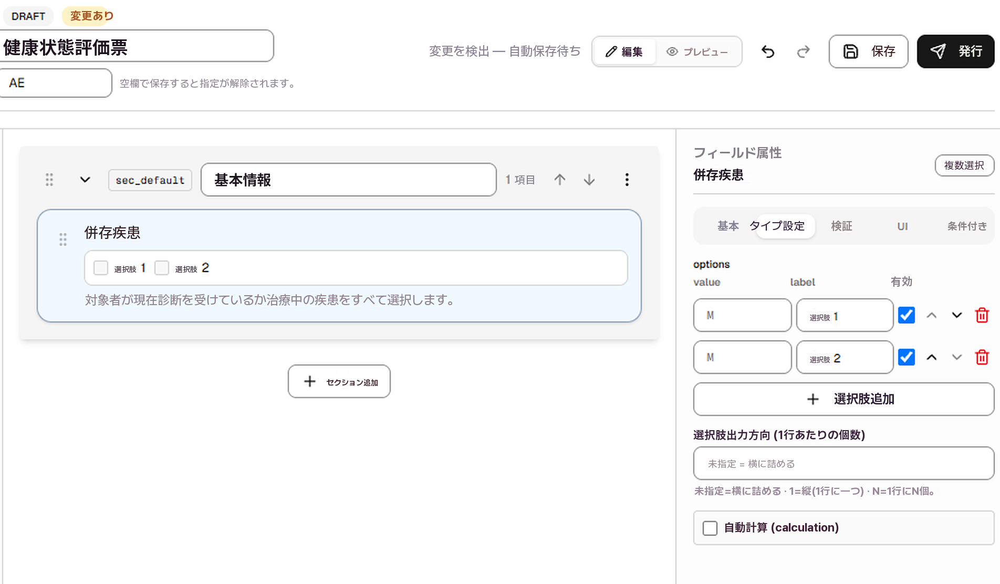
options — 選択肢の一覧です。value · label · 有効の3つの欄と、順序 · 削除ボタンで構成されます。3.2
[+ 選択肢追加] — 選択肢を1行追加します。3.2
選択肢出力方向 (1行あたりの個数) — チェックボックスを1行にいくつずつ並べるかを決めます。3.3
自動計算 (calculation) — 項目は表示されますが、このタイプでは使用しません。他のフィールドの値から数値を算出する機能なので、数値タイプで使用してください。
注意事項
必須確認 データ破損 · フォーム完了不可
- • ⛔ 最初に置かれた二行の value は空です。label には
選択肢 1·選択肢 2が入っていますが、value は薄いM— つまり入力例です。そのまま保存すると保存値のない選択肢になるため、必ず入力してください。3.2
誤解しやすい動作
- • 表示方式は選べません。複数選択は常にチェックボックスで表示され、ドロップダウンに変える設定は提供されていません。
- • デフォルト値は指定できません。あらかじめ選んでおく必要があるなら、設計を見直してください — 複数選択は、記録者が自分で確認して選ぶことを前提としています。
参考
- • このタブの構成は、フィールドを作成するときに選択したタイプで固定されます。タイプが異なると、このタブの項目も異なります。
単一選択との違い
| 単一選択にはあり | 複数選択には | 理由 |
|---|---|---|
| 表示方式(ドロップダウン/ラジオ) | なし | 複数を選ぶタイプなのでチェックボックスに固定 |
| デフォルト値(defaultValue) | なし | あらかじめ選んでおく欄が提供されない |
| 選択肢出力方向 — ラジオのときのみ | 常に表示 | チェックボックスは常に複数行の配置を決める必要がある |
3.2選択肢一覧 (value · label · 有効 · 順序 · 削除)
概要
選択肢を1行に1つずつ作成します。1行は保存値(value) · 表示文言(label) · 有効かどうかで構成され、右側のボタンで順序を変えたり行を削除したりできます。この画面がこのタイプの中心です。
画面説明
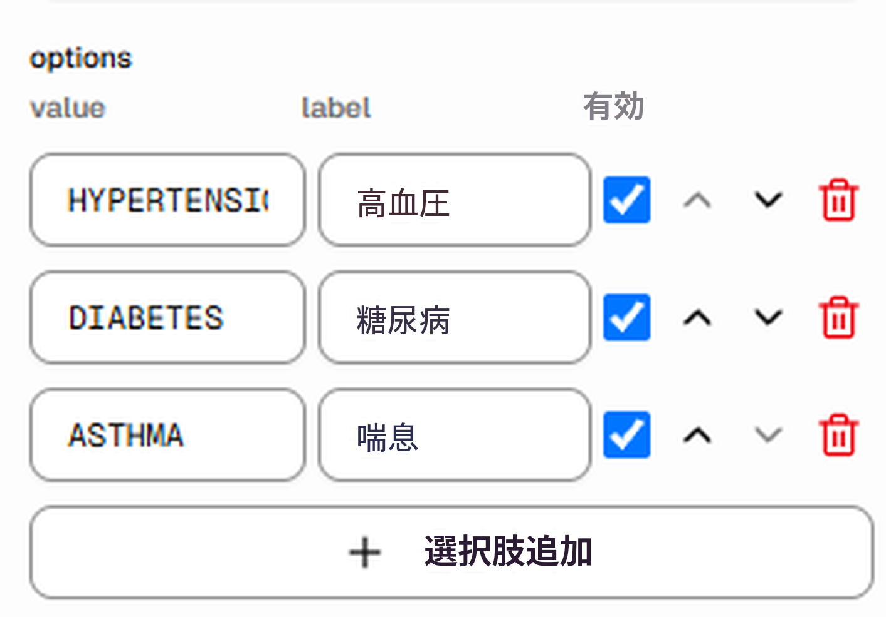
value — データに保存される値です。キャプチャでは HYPERTENSION · DIABETES · ASTHMA のように意味が分かる文字列を使っています。条件付き表示6.2や検証規則4.3でこのフィールドを参照するときも、この値を使用します。
label — 画面に表示される文言です。キャプチャでは 高血圧 · 糖尿病 · 喘息 です。データには入りません。
有効 · 順序(↑↓) · 削除(🗑) — 有効を解除すると、その選択肢を削除せずに一覧から外しておけます。矢印で表示順序を変え、ごみ箱で行を削除します。
[+ 選択肢追加] — 選択肢を1行追加します。必要な数だけ繰り返します。
注意事項
必須確認 データ破損 · フォーム完了不可
- • ⛔ 発行した後に value を変えないでください。すでに保存された値がどの選択肢なのか分からなくなります。表記だけを直したい場合は label だけを変えてください。
- • ⛔ 「なし」の選択肢を入れるかどうかを先に決めてください。該当する項目が一つもない場合がありうる質問であれば、
NONE·なしのような行を追加しないと、記録者が「確認したうえで該当なし」を記録できません。2.2 · 2.4
誤解しやすい動作
- • value はキャプチャのように意味が分かる文字列がよいです。複数選択は一つの欄に複数の値が保存されるため、抽出データで
HYPERTENSION;ASTHMAのように表示されたときにすぐ読めます — 数字コードだと毎回対応表を探す必要があります。 - • 順序は記録者が読む順序です。よくある項目を前に置くとチェックが速くなり、「なし」は一番最後に置く方が混乱が少なくなります。
3つの欄の役割
| 欄 | 入るもの | データに保存されるか | 変更してよいか |
|---|---|---|---|
| value | 保存値 (例: ASTHMA) | 保存される | 発行後は変更禁止 |
| label | 画面の文言 (例: 喘息) | 保存されない | いつでも変更可能 |
| 有効 | 選択肢を提供するかどうか | 保存されない | 運用中の変更は慎重に |
3.3選択肢出力方向 (1行あたりの個数)
概要
チェックボックスを1行にいくつずつ並べるかを決めます。単一選択ではラジオのときのみ表示される項目ですが、複数選択では常に表示されます — 選択肢が常にチェックボックスとして展開されるためです。
画面説明
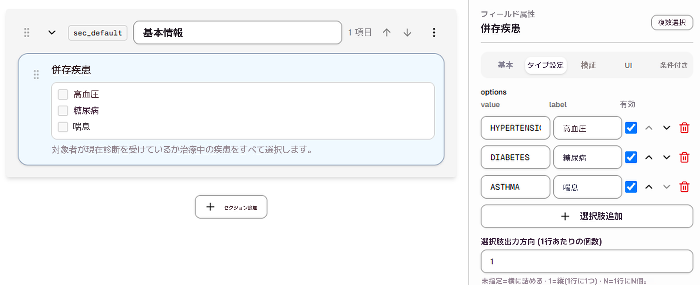
選択肢出力方向 (1行あたりの個数) — 数字を入力します。キャプチャでは 1 です。
チェックボックスが1行に一つずつ縦に配置されます。指定する前は横に並んでつながっていました。
注意事項
必須確認 データ破損 · フォーム完了不可
- • 漏れなく目を通す必要がある一覧は、縦(1)にしてください。複数選択は該当するものをすべて探す必要があるタイプなので、横に詰まっていると目が飛んでチェックを漏らしやすくなります。
誤解しやすい動作
- • 選択肢が多いと画面が長くなります。縦にすると一度に全部見えないことがあるため、項目が10個を超える場合は2列(N=2)程度で折り合いをつけてください。
- • レイアウト幅5.2と合わせて影響します。フィールドの幅を狭めておくと、指定した個数が1行に収まらないことがあります。
参考
- • 表示方式を選ぶ項目はありません。複数選択は常にチェックボックスです。3.1
入力値による配置
| 入力 | 配置 | 適した場面 |
|---|---|---|
| 空欄 (未指定) | 横に詰める — 幅が余る分だけ続けて並べる | 選択肢の文言が短く、数が少ないとき |
1 | 縦 — 1行に1つ | 漏らしてはいけない一覧 · 文言が長いとき |
N | 1行に N 個 | 2列 · 3列にきれいに並べたいとき |
検証タブ — 保存前の値チェック
- 4.1検証規則がない状態
- 4.2規則の追加
- 4.3規則作成完了 — 他フィールドと比較
4.1検証規則がない状態
概要
保存する前に値が条件に合っているかをチェックする規則をまとめておくタブです。複数選択は作成しておいた選択肢からしか選べないため範囲チェックは不要ですが、その代わりに他のフィールドとの関係をチェックするときにこのタブを使用します。4.3
画面説明
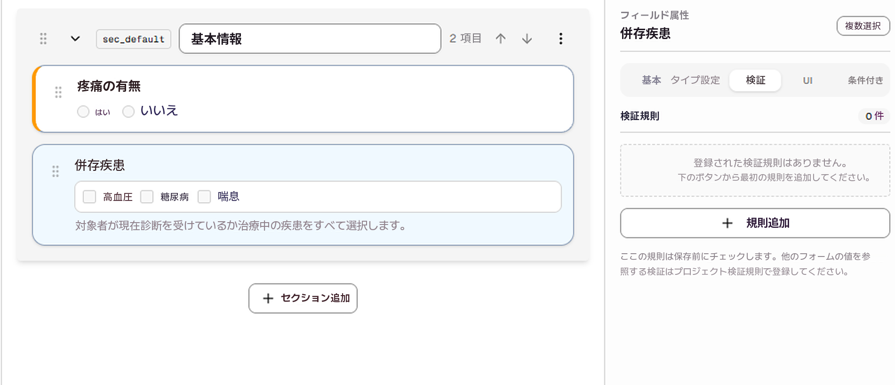
[+ 規則追加] — 最初の規則を作成します。選択した後の画面は 4.2 で説明します。
検証規則領域と、登録された規則数です。最初は 0 件 です。
規則がない場合は、「登録された検証規則はありません。下のボタンから最初の規則を追加してください。」という案内が表示されます。
下部の案内 — 「ここの規則は保存前にチェックします。他のフォームの値を参照する検証はプロジェクト検証規則で登録してください。」
注意事項
必須確認 データ破損 · フォーム完了不可
- • ⛔ 「いくつ以上選ぶ必要がある」という規則は作成できません。このタブの規則は他のフィールドとの関係をチェックするもので、選んだ数は数えません。最小個数を強制する必要がある場合は、プロジェクト検証規則で扱えるかを確認してください。
- • 他のフォームの値を参照する検証は、ここでは作成できません。そのような規則は「プロジェクト検証規則」画面で登録してください。
誤解しやすい動作
- • キャプチャにはフィールドが二つあります。「疼痛の有無」と「併存疾患」 — 前の質問の答えによって後の項目を尋ねるかどうかが分かれる関係なので、4.3 で二つのフィールドを結ぶ規則を作成します。
- • 規則は作成しなくてもかまいません。選択肢だけで十分な項目がほとんどです。
4.2規則の追加
概要
4.1 の [+ 規則追加] を選択すると、規則 1 ブロックが作成されます。最初は値の範囲が設定されていますが、複数選択で実際に使うのは他フィールドと比較です — ruleType を変えると画面が変わります。4.3
画面説明
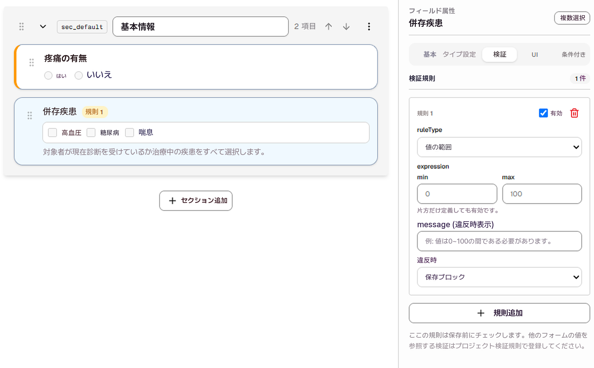
[+ 規則追加] — 規則をもう一つ作成します。(4.1 で選択したのと同じボタンです。)
「規則 1」ブロックが作成され、キャンバスの表示名の横に「規則 1」バッジが表示されます。
規則数が 1 件 に変わります。
有効チェックボックスと削除アイコン — 規則を削除せずに一時的に停止できます。
ruleType — 規則の種類です。最初は値の範囲が選択されています。
min — 値の範囲を選んだときに表示される下限の欄です。
max — 同じ条件で表示される上限の欄です。
薄い文字の 0 · 100 と「例: 値は0~100の間である必要があります。」は入力例であり、設定された値ではありません。
message (違反時表示) — 規則に違反したときに、ユーザーに表示する文言です。
違反時 — 保存ブロックまたは警告から選択します。(ruleType によっては選べなくなることもあります — 4.3)
注意事項
必須確認 データ破損 · フォーム完了不可
- • ⛔ 複数選択に「値の範囲」を使わないでください。保存される値は複数の集まりなので大小比較が成り立たず、選択肢以外の値はそもそも入ることができません。1.1 · 3.2
- • message を空欄にすると、ユーザーはブロックされた理由が分かりません。必ず入力してください。
誤解しやすい動作
- • このタイプで役立つのは「他フィールドと比較」です。「前の質問で特定の値を選んだときだけ、この項目に回答できる」といった関係をチェックします。4.3
- • 規則は複数作成でき、有効な規則をすべて満たした場合に保存されます。
4.3規則作成完了 — 他フィールドと比較
概要
ruleType を他フィールドと比較に変えると、画面がまったく変わります。同じフォームの他のフィールドの値と比べてチェックするため、前の質問の回答によってこの項目の可否が分かれる関係を表現できます。
画面説明
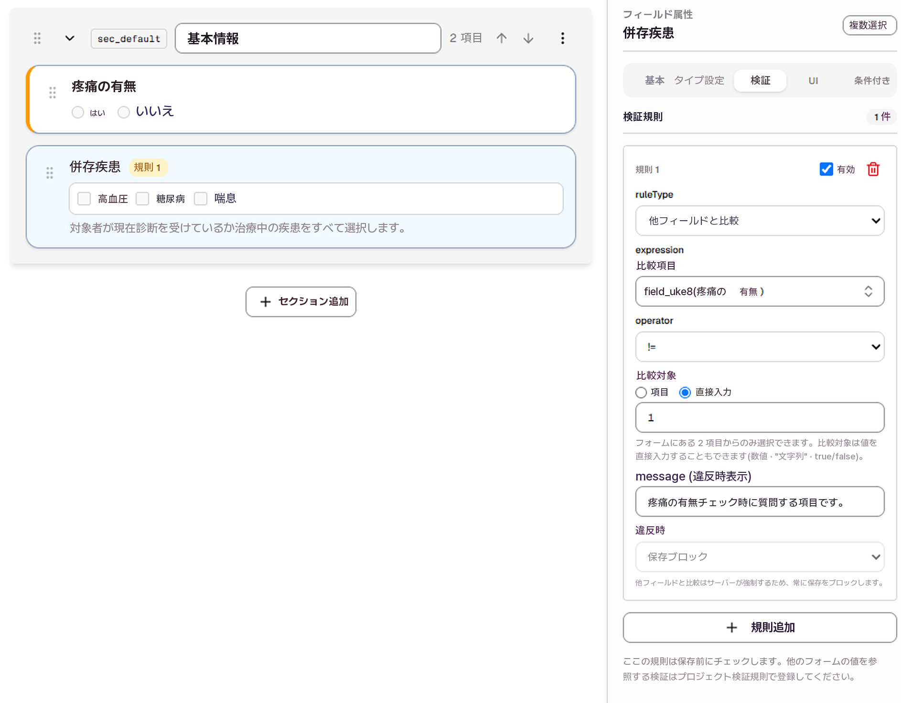
ruleType = 他フィールドと比較 — 選択すると、下の欄が比較用に変わります。
比較項目 — 同じフォームの他のフィールドを選びます。キャプチャでは field_uke8(疼痛の有無) です。
operator — 比較方法です。キャプチャでは !=(等しくない) です。
比較対象 — 項目と直接入力から選びます。キャプチャでは直接入力で 1 を入れています — 「疼痛の有無」の保存値(value)です。3.2
画面の案内 — 「フォームにある 2 項目からのみ選択できます。比較対象は値を直接入力することもできます(数値 · "文字列" · true/false)。」
message (違反時表示) — キャプチャでは 疼痛の有無チェック時に質問する項目です。 です。
違反時 — グレーで無効です。画面の案内のとおり「他フィールドと比較はサーバーが強制するため、常に保存をブロックします。」 — この規則では警告を選べず、保存ブロックに固定されます。
注意事項
必須確認 データ破損 · フォーム完了不可
- • ⛔ 条件の向きを発行前に必ず確認してください。検証規則は満たすべき条件として書くのが原則ですが、キャプチャの設定(
疼痛の有無 != 1)と message(「疼痛の有無チェック時に質問する項目」)は互いに逆の意味に読めます。不等号一つで意味が反転するため、設定した後にプレビューで実際の動作を確認してください。 - • ⛔ 比較対象には label ではなく value を入れます。参照するフィールドの選択肢一覧で、保存値を先に確認してください。3.2
誤解しやすい動作
- • この規則は警告にできません。違反時が保存ブロックに固定されるため、必ず防ぐ必要がある関係にだけ使用してください。
- • 同じ関係であれば、条件付き表示が先です — そもそも尋ねなければ、誤って入力することもありません。6章
UIタブ — 画面配置と案内文
- 5.1UIタブの全体構成
- 5.2レイアウト幅
- 5.3読み取り専用 · 非表示
- 5.4helpText (ヘルプ)
5.1全体構成
概要
値そのものではなく、画面にどう配置し、どう案内するかを決めるタブです。このタブの設定は、保存されるデータそのものを変更しません。ただし、非表示は画面上で隠すだけで必須集計からは除外されないため、使用する前に 5.3 を確認してください。
画面説明
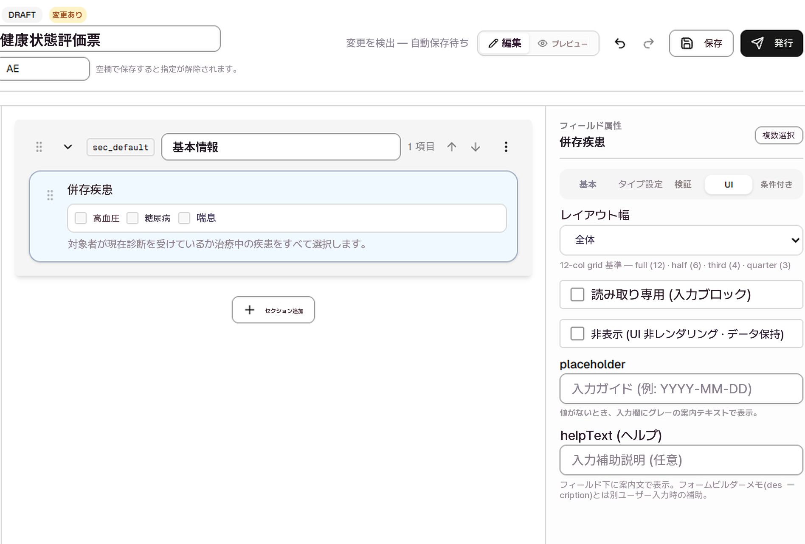
レイアウト幅 — 一行の中でこのフィールドが占める幅です。選択肢の意味は、すぐ下の案内「12-col grid 基準 — full (12) · half (6) · third (4) · quarter (3)」に記載されています。5.2
読み取り専用 (入力ブロック) — 表示はしますが、変更できないようにします。5.3
非表示 (UI 非レンダリング · データ保持) — 画面から隠します。5.3
placeholder — 項目は表示されますが、複数選択では使われません。値がないときに入力欄の中に表示される案内文ですが、チェックボックスにはそのような場所がないためです。案内が必要な場合は helpText を使用してください。5.4
helpText (ヘルプ) — フィールドの下に表示される案内文です。5.4
注意事項
必須確認 データ破損 · フォーム完了不可
- • このタイプの案内文は helpText 一つだけです。placeholder は使えないため、「すべて選択」であることと選択基準を helpText とヘルプ2.1に分けて書いてください。5.4
誤解しやすい動作
- • 幅と出力方向が合わせて配置を決めます。チェックボックスが横に並ぶため、幅を狭めると指定した1行あたりの個数が守られないことがあります。3.3 · 5.2
- • 入力欄に薄く表示される
入力ガイド (例: YYYY-MM-DD)·入力補助説明 (任意)は入力例であり、設定された値ではありません。
参考
- • デフォルト値はレイアウト幅 = 全体、読み取り専用 · 非表示は解除状態です。
5.2レイアウト幅
概要
1行を12マスに分けた 12-column grid 上で、このフィールドが占める幅を選択します。複数選択はチェックボックスが横に並ぶタイプなので、幅が配置に直接影響します。
画面説明
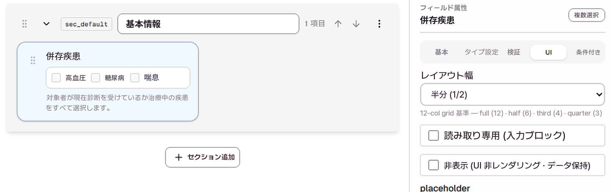
レイアウト幅 — 選択リストから幅を指定します。例は半分 (1/2)です。
フィールドが半分の幅に縮まります。キャプチャでは文言が短いため、チェックボックス三つがまだ1行に収まっていますが、選択肢が増えたり文言が長くなったりすると折り返しが発生します。
注意事項
必須確認 データ破損 · フォーム完了不可
- • ⛔ 選択肢が多いフィールドは幅を狭めないでください。チェックボックスが不規則に折り返されると、見落としやすくなります。どうしても狭める必要がある場合は、出力方向を 1(縦) に合わせて変えてください。3.3
誤解しやすい動作
- • 幅を狭めると、次のフィールドが同じ行に配置されます。一行の合計が12を超えると、次の行に移ります。
- • 設定を変えた後は、キャンバスで配置を確認してください。プレビューが実際の折り返しをそのまま表示します。
参考
- • 画面幅が狭い端末では、設定に関係なく一行に一つずつ縦に配置されることがあります。
幅の選択肢
| 選択 | 占める列数 | 複数選択では |
|---|---|---|
| 全体 | 12 | 選択肢が多くても安全 — 推奨 |
| 半分 (1/2) | 6 | 短い選択肢 3~4個まで |
| 三分の一 (1/3) | 4 | 折り返しが多くなる |
| 四分の一 (1/4) | 3 | 推奨しない |
5.3読み取り専用 · 非表示
概要
フィールドを変更できないようにしたり、表示されないようにしたりします。どちらも保存された値はそのまま保持されます。
画面説明
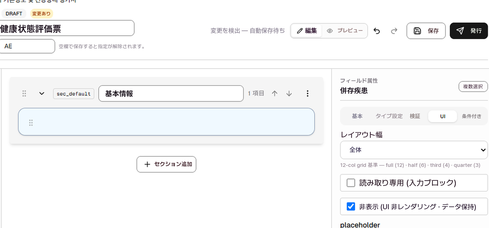
読み取り専用 (入力ブロック) — 選んだ項目は表示されますが、ユーザーは変更できません。(このキャプチャでは解除状態)
非表示 (UI 非レンダリング · データ保持) — 入力画面に表示しません。すでに保存された値は削除されません。
キャンバスからフィールドが消え、セクションが空に見えます。
注意事項
必須確認 データ破損 · フォーム完了不可
- • ⛔ 必須項目を非表示にしないでください。UIタブの非表示は画面上で隠すだけで、必須集計からは除外されません — ユーザーが選べない項目が分母に残り、フォームを完了できなくなります。
- • 非表示はデータを削除しません。画面上で消えるだけなので、値を削除するにはフィールドを削除する必要があります。
誤解しやすい動作
- • 条件付きタブの非表示とは異なります。条件が合わずに非表示になったフィールドは、必須集計から除外されます6章。同じ「非表示」という表現を使いますが、検証での扱いが正反対なので、区別してください。
- • 読み取り専用と非表示は異なります。読み取り専用は「表示するが変更できない」、非表示は「表示しない」です。すでに選んだ項目を確認させる必要がある場合は、読み取り専用を使用してください。
参考
- • 非表示にしても構造パネルにはそのまま残っています — 再度選択して設定を元に戻せます。
5.4helpText (ヘルプ)
概要
フィールドの下に付く案内文です。複数選択は placeholder を使えないため、helpText が唯一の案内手段です。入力を始めても消えないため、選択基準を書いておくのに適しています。
画面説明
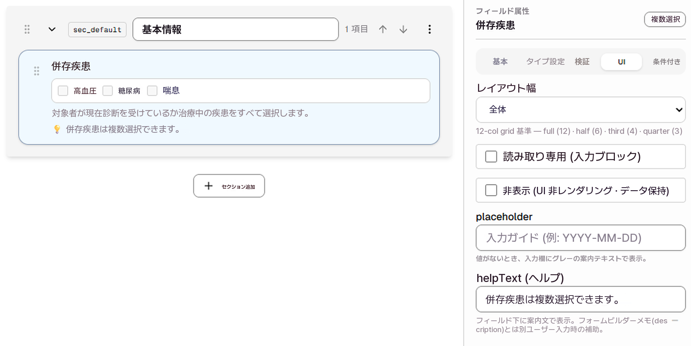
placeholder — 空欄のままにします。項目は表示されますが、チェックボックスには適用する場所がありません。5.1
helpText (ヘルプ) — フィールドの下に表示する案内文を入力します。キャプチャでは 併存疾患は複数選択できます。 で、複数を選べることを知らせています。
フィールドの下に電球アイコン(💡)とともに表示されます。項目を選んでも消えません。
注意事項
必須確認 データ破損 · フォーム完了不可
- • 「複数を選べる」ことを必ず書いてください。キャプチャの「複数選択できます」がその役割です — チェックボックスを見ても一つだけ選んで先に進む場合が実際に多くあります。
- • 「該当しなければ『なし』を選択」のような案内もここに書きます。選択肢を作成しておいても、記録者がその意味を知らなければ空欄のまま先に進みます。2.2 · 3.2
誤解しやすい動作
- • description と helpText は別々の項目です。画面の案内のとおり — helpText は「フォームビルダーメモ(description)とは別 — ユーザー入力時の補助」です。両方を入力すると、二行が一緒に表示されます。
案内文の役割
| 項目 | 表示位置 | 複数選択では | 設定場所 |
|---|---|---|---|
| helpText | フィールドの下 (💡) | 複数選択可 · 選択基準 | UIタブ |
| description | 表示名の下 | 何を尋ねる項目か | 基本タブ 2.1 |
| placeholder | — | 使われない | UIタブ |
条件付きタブ — 他の値に応じて表示する
- 6.1条件付き表示の有効化
- 6.2条件の設定
6.1条件付き表示の有効化
概要
他のフィールドの値に応じてこのフィールドを表示したり隠したりする機能です。「疼痛の有無 = はい」のときだけ併存疾患を尋ねるような分岐に使用します — 該当しない被験者に長いチェックボックスの一覧を見せないため、フォームがずっと短くなります。
画面説明
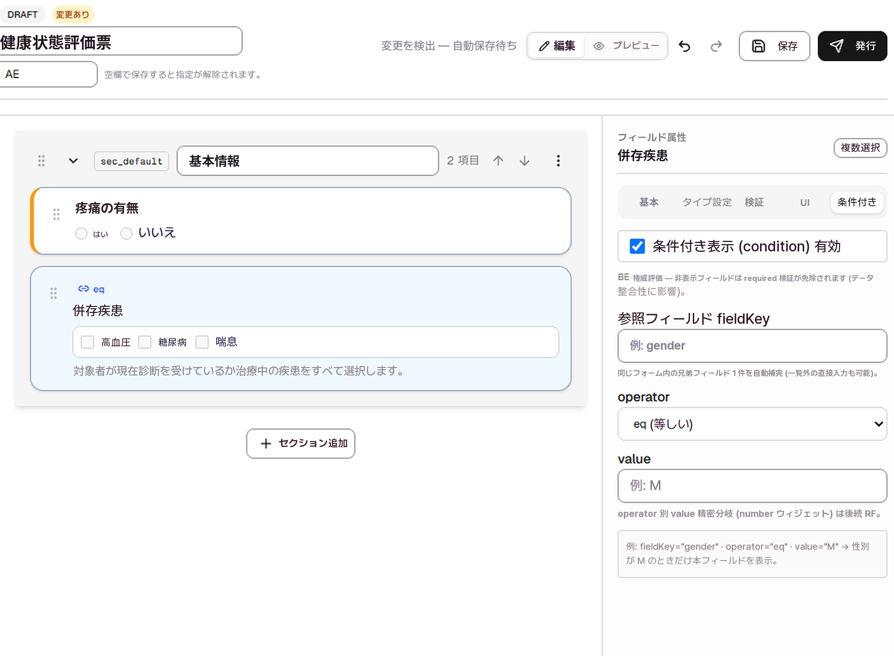
条件付き表示 (condition) 有効 — 選択すると、下の条件設定が表示されます。
キャンバスのフィールドの上に 🔗 eq バッジが表示され、条件が適用されたことを知らせます。
⚠ 画面の案内 — 「非表示フィールドは required 検証が免除されます (データ整合性に影響)。」 条件の判定はシステムが実行します。
参照フィールド fieldKey — 条件の基準となる、同じフォーム内の他のフィールドです。同じフォームの兄弟フィールドが自動補完され、一覧にない値を直接入力することもできます。
operator — 比較方法です。デフォルト値はeq (等しい)です。
value — 比較する値です。
下部の例 — fieldKey="gender" · operator="eq" · value="M" → 性別が M のときだけ本フィールドを表示。
注意事項
必須確認 データ破損 · フォーム完了不可
- • 条件を設定すると、必須検証が免除される場合があります。条件が合わずに非表示になっている間は、そのフィールドが必須であっても空の状態でフォームが完了します。これは不具合ではなく意図された動作です。
- • ⛔ すでにチェックしておいた項目がある状態で条件が偽になると、その選択が画面から消えます。複数を選んでおいた場合はその集まり全体が見えなくなるため、分岐の基準となるフィールドを後で変えるときは注意してください。
誤解しやすい動作
- • 検証規則4.3より先に、条件付き表示を検討してください。該当しない人にそもそも尋ねなければ、誤って選ぶことも、保存がブロックされることもありません。
参考
- • 条件を有効にして参照フィールドを空欄にすると、条件は成立しません。必ず②~④をすべて入力してください。6.2
6.2条件の設定
概要
6.1 で有効にした条件を最後まで入力した状態です。この設定では、「疼痛の有無」フィールドの値が 1 のときだけこのフィールドが入力画面に表示されます。
画面説明
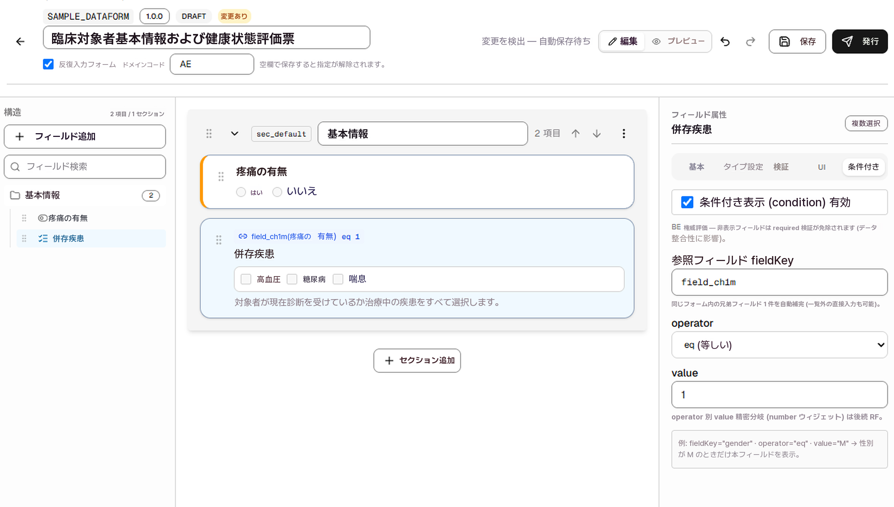
疼痛の有無 が 1 のときだけ表示されるように設定した状態参照フィールド fieldKey = field_ch1m — 同じフォームの「疼痛の有無」フィールドを指します。
operator = eq (等しい)
value = 1 — 画面に表示される「はい」ではなく、その選択肢の保存値(value)を入力します。3.2
①~③をすべて入力した結果 — キャンバスのバッジが 🔗 field_ch1m(疼痛の有無) eq 1 に具体化されます。
参照先の「疼痛の有無」フィールドが同じフォーム内にある必要があり、構造ツリーで確認できます。
下部の例 — fieldKey="gender" · operator="eq" · value="M" → 性別が M のときだけ本フィールドを表示。
注意事項
必須確認 データ破損 · フォーム完了不可
- • ⛔ value には label ではなく保存値を入力します。「はい」と書くと条件が永遠に成立せず、このフィールドは最後まで表示されません。参照するフィールドの選択肢一覧で、保存値を先に確認してください。3.2
- • ⛔ 複数選択フィールドを条件の基準にしないでください。
eqは値が完全に等しいときだけ成立しますが、複数選択の値は選んだものの集まりなので、どの組み合わせを選んだかによって変わります。基準として使う場合は、単一選択フィールドを別に置いてください。1.1 - • 参照フィールドの value や fieldKey を変えると、条件が気付かないうちに壊れます。エラーなしにただ成立しなくなるため、発行後の変更は危険です。2.1 · 3.2
参考
- • 条件を使用するとフォームが短くなり、不要な入力が減ります。ただし、条件が互いに衝突すると最後まで表示されないフィールドが生じるため、設定後にプレビューで必ず確認してください。
付録
- 7.1設定項目一覧
7.1複数選択フィールドの設定項目一覧
タブ別の設定項目
| タブ | 項目 | 何を決めるか | 本文 |
|---|---|---|---|
| 基本 | fieldKey | 値が保存される実際のキー (保存後の変更禁止) | 2.1 |
| label (表示名) | 画面に表示される項目名 | 2.1 | |
| description (ヘルプ) | 表示名の下の補助説明 — 「すべて選択」であることを明記すること | 2.1 | |
| 必須入力 | 一つ以上選択すれば充足 (「なし」の選択肢を先に) | 2.2 | |
| SDV検証対象 | CRA原資料照合の対象か · 検証必須かどうか | 2.3 | |
| AE意味ロール | このタイプは指定対象ではない (単一選択専用) | 1.1 | |
| 未測定宣言を許可 | 「確認不可」を値として残せるかどうか · 表示ラベル · 表示灯 | 2.4 | |
| タイプ設定 | options — value | 保存される値 (発行後は変更禁止) | 3.2 |
| options — label | 画面に表示される文言 (いつでも変更可能) | 3.2 | |
| options — 有効 · 順序 · 削除 | 選択肢を提供するかどうか · 表示順序 · 行の削除 | 3.2 | |
| 選択肢出力方向 | 1行あたりの個数 — 常に表示(未指定=横 / 1=縦 / N=N個) | 3.3 | |
| 自動計算 | このタイプでは使用しない | 3.1 | |
| 検証 | ruleType | 規則の種類 — このタイプでは他フィールドと比較を使用 | 4.2 · 4.3 |
| 比較項目 · operator · 比較対象 | 同じフォームの他のフィールドと比べる条件 (value で比較) | 4.3 | |
| message | 違反時にユーザーに表示する文言 | 4.3 | |
| 違反時 · 有効 | 他フィールドと比較は保存ブロックに固定 · 規則の有効 · 無効 | 4.3 | |
| UI | レイアウト幅 | 12-col grid 上の幅 — 選択肢が多ければ全体 | 5.2 |
| 読み取り専用 | 表示はするが変更できないように | 5.3 | |
| 非表示 | 画面に表示しない (保存値は保持 · 必須集計には残る) | 5.3 | |
| helpText (ヘルプ) | 唯一の案内手段 — placeholder は使われない | 5.4 | |
| 条件付き | 条件の有効化 | 条件付き表示を使用するかどうか (必須検証の免除) | 6.1 |
| 参照フィールド fieldKey | 条件の基準となる、同じフォームのフィールド | 6.2 | |
| operator · value | 比較方法と比較する値 (保存値を入力) | 6.2 |
必ず覚えておくこと
必須確認 データ破損 · フォーム完了不可
- • 「なし」を未測定として記録しないでください。確認した結果なので、選択肢として追加してこそ情報が残ります。2.4 · 3.2
- • 必須に指定する前に、「なし」の選択肢を作成してください。ないと、該当事項のない被験者がフォームを完了できません。2.2
- • 最初の二行の value は空です。label だけが入っているため、保存値を必ず入力してください。3.1 · 3.2
- • 発行した後に value を変えないでください。既存データの意味が失われ、参照していた条件も気付かないうちに壊れます。3.2 · 6.2
- • 複数選択を条件の基準にしないでください。値が集まりなので
eqが成立しません。6.2
誤解しやすい動作
- • 保存値は選んだものの集まりです — 抽出形式を分析担当者とあらかじめ合わせてください。1.1
- • 表示方式とデフォルト値はありません。チェックボックスに固定で、あらかじめ選んでおくことはできません。3.1
参考
- • 漏れなく目を通す必要がある一覧は、出力方向を 1(縦) にしてください。3.3
この文書で扱っていないもの
AE意味ロール — 基本タブにありますが、画面の案内が単一選択フィールドに指定するよう示しているため、このタイプでは使用しません。1.1
共通コード(CodeGroup)連携 — 選択肢をプロジェクト共通コードで管理する方法はシステムにはありますが、この画面には項目がありません。フォームごとに直接列挙する必要があるため、value と label を同じに揃えているかを確認してください。3.2
自動計算 (calculation) — 項目は表示されますが、このタイプでは使用しません。数値タイプで使用してください。3.1
「値の範囲」検証規則 — 規則の種類として選ぶことはできますが、値が集まりなので成り立ちません。4.2